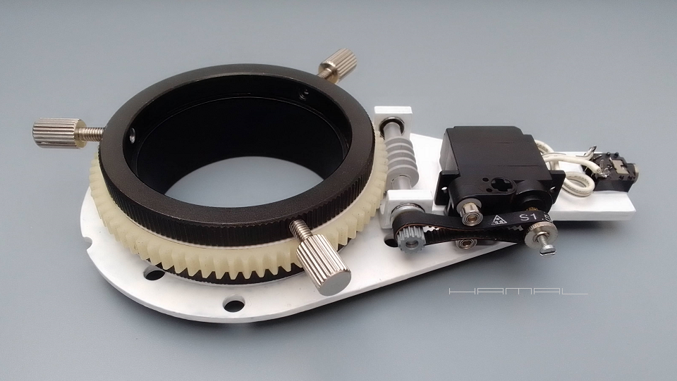
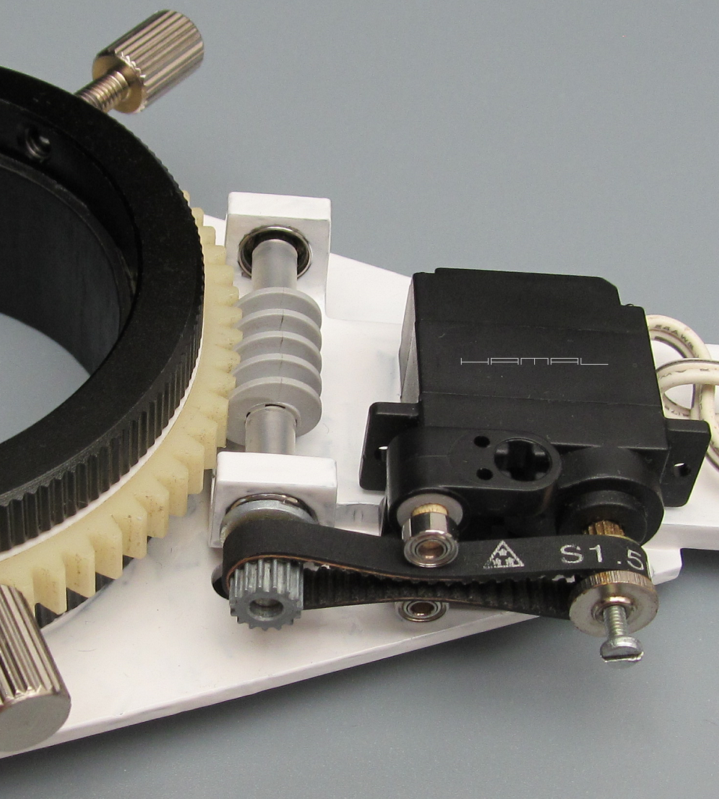
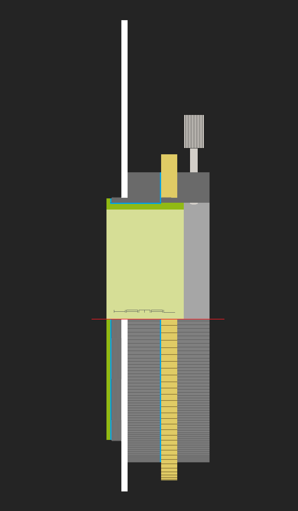

.
samodzielna budowa
minimalistycznego rotatora kadru
|
V1
Za punkt wyjścia takiego urządzenia służą połączone minimalistycznie specjalnym pierścieniem dwa identyczne zewnętrzne pierścienie danego wyciągu okularowego. Pierwszy połączony z korpusem, nakręcany na tuleję wyciągu, stanowi nieruchomą bazę dla serwa modelarskiego napędzającego ślimaka z LEGO, a drugi, z osadzoną zębatką z kserokopiarki pełniącą funkcję ślimacznicy, obracając się z dedykowanym pierścieniem, jest elementem ruchomym urządzenia. Serwo modelarskie zostało pozbawione ogranicznika i może obracać się dookoła dowolną ilość razy. Minimalna ilość elementów, minimalna grubość.     
|